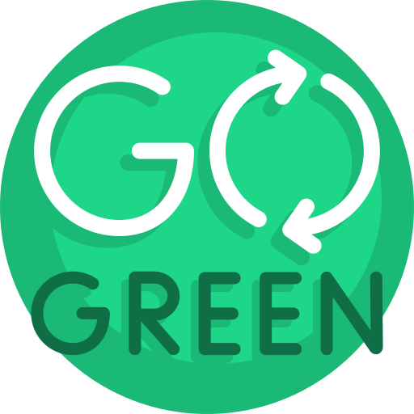

How will Eco-Lifestyle help?

Eco-friendly products are safer for the environment, people and wildlife because they are durable, reusable, less toxic, and less resource-intensive. Pursuing a Eco-Lifestyle all at once can be overwhelming and complicated.
So, let's all start small and focus on what we do daily and how we can do it eco-ly.
Below you will find how each of these "small-businesses" produce their products and how their products affectively promote eco-lifestyle.